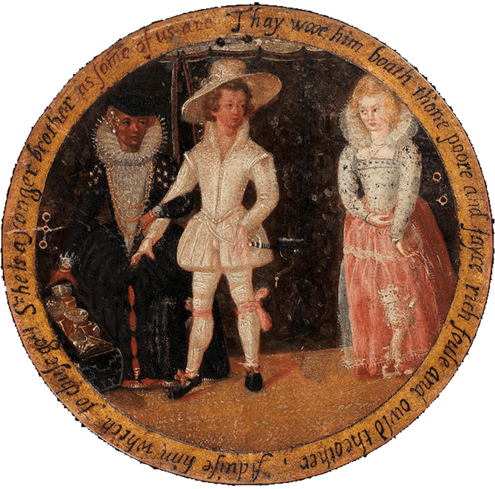
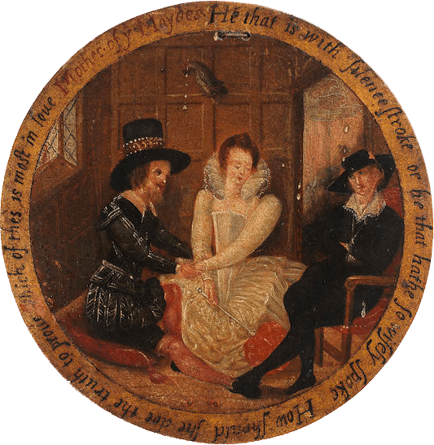
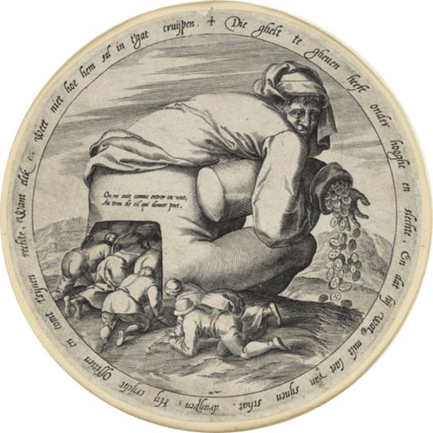

To experience this website as intended, please change your device to landscape orientation or a laptop.
Beshrew Me
About the Project
Characters
Texts
Infographics
Book of Proverbs
Beyond the Stage
Tinker's Table


